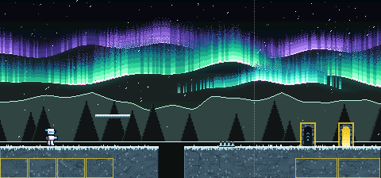
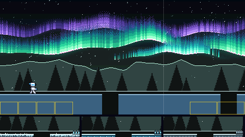
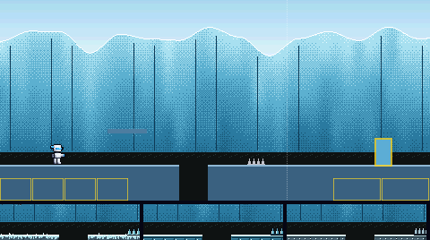
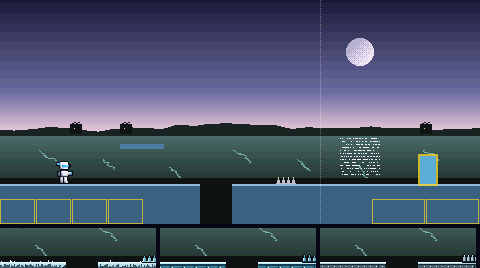
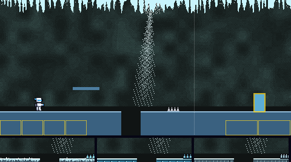
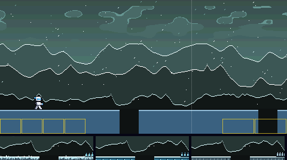
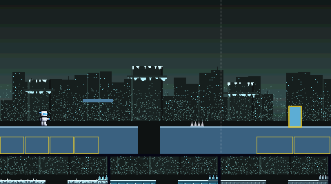
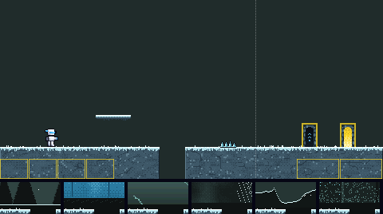
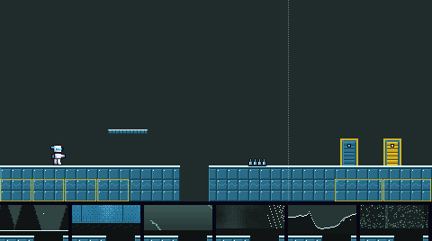
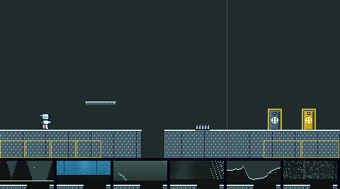

The way to Frost Man's door. Six backdrops, and three materials (each a floor, platform, spikes, boss door and exit door), all built from his colours. Batch 2 of 3.
Picked by the owner on 6 Nov 2026: backdrop 1, the aurora night, made prettier as they asked, and material A, packed snow. In the game since 6 Nov 2026.
Backdrop 1 behind material A, with the player standing still. The aurora now has three curtains of light, each with a bright lower edge and rays rising from it, green turning teal and violet as they rise. They ripple, brightness runs along them, and the brightest parts flare white and pink. The air glows round them, stars twinkle behind, and the far peaks catch their light. The boss door is on the left, the exit door on the right.

Each is shown behind today's plain pieces, so only the backdrop changes. The strip under it is its pit edge with floors A, B and C in front. The two marked MOVING scroll in layers, the far ones slower; their pictures move.






Each shows the floor with a pit, a platform, spikes, the boss door (left) and the exit door (right), in front of today's flat colour. The strip under it is its pit edge against backdrops 1 to 6. The contrast numbers are the worst against any of the six; the game asks at least 2 for the ground, 4.5 for its lit edge and 4.5 for the white player on it.


